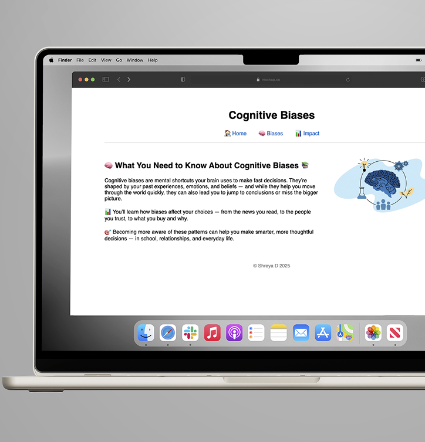
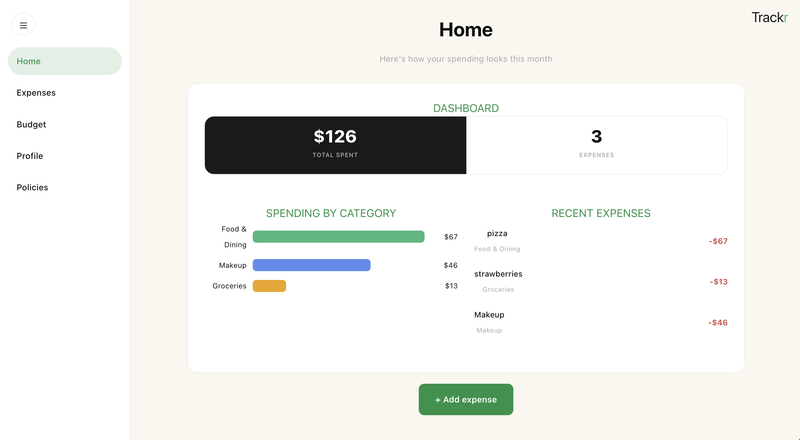
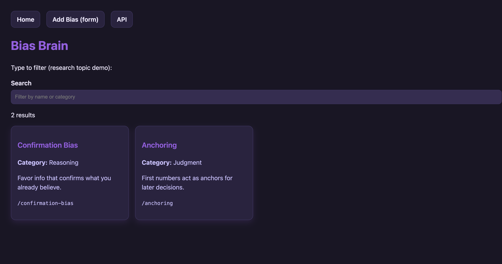
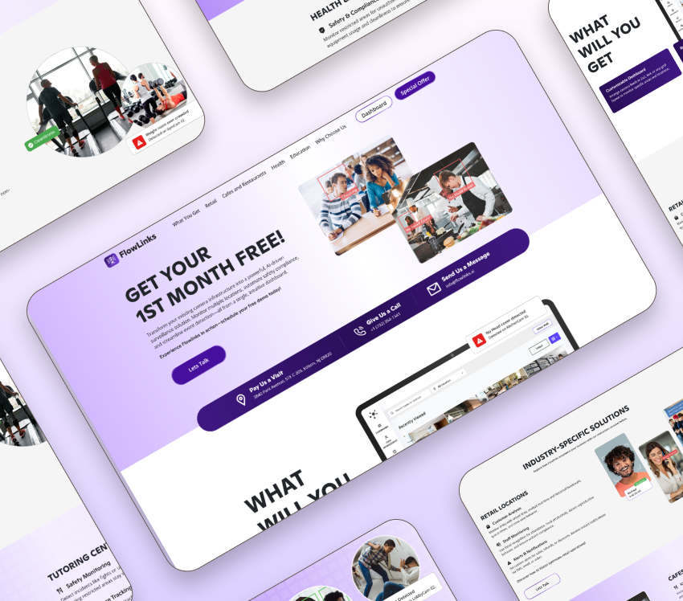
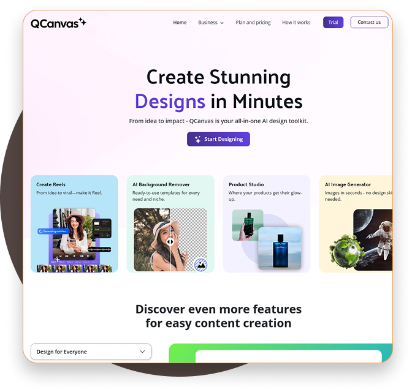

Cognitive Biases
Educational website exploring cognitive biases, decision-making, visual hierarchy, and responsive design.
Computer Science · Psychology · Product
I’m Shreya Dharayan, a Computer Science graduate focused on product, UX, and data-informed digital experiences.
Selected Work
Full-Stack Development · React · UX
A full-stack expense management platform designed for students. Built through agile sprint workflows with frontend development, profile management, theme customization, and user experience improvements.
View Project →
Psychology · Web Design · Frontend
An interactive platform focused on cognitive biases and decision-making, combining psychology research, educational content, and modern web design principles.
View Project →
UX Design · Wireframing · Design Systems
Supported the design of a link-management platform through user research, wireframing, interface design, and design system development.
View Project →
Product Design · Research · Figma
Conducted user research and competitor analysis to inform wireframes, prototypes, final UI, and a cohesive visual design system.
View Project →
Additional Work

Educational website exploring cognitive biases, decision-making, visual hierarchy, and responsive design.
Responsive visual composition combining Photoshop editing, image optimization, and HTML/CSS development.
About
As a Computer Science graduate with a Psychology minor, I approach digital products through both technical and behavioral lenses. My work spans frontend development, UX research, product thinking, and data-informed problem solving.
Figma · User Research · Wireframing · Prototyping
React · JavaScript · HTML · CSS · Git
Python · SQL · Excel · Data Visualization